Pulse Code Modulation, DPCM, and all major digital modulation schemes — ASK, FSK, BPSK, QPSK, QAM — with signal constellations, bandwidth analysis, and comprehensive GATE/IES exam coverage drawn from Haykin, Proakis, Lathi, and Sklar.
Every signal we wish to communicate — voice, video, sensor data — originates as a continuous, analogue waveform. Digital communication converts this analogue waveform into a stream of binary digits (bits) and then maps those bits onto a physical waveform for transmission. This two-step process — source coding followed by channel modulation — is the heart of every modern communication system, from mobile phones to deep-space probes.[1]
Analogue signals degrade with distance — noise accumulates and cannot be removed. A digital signal can be regenerated perfectly at each relay station. This is why the entire telecom ecosystem shifted from analogue (PSTN) to digital (GSM/4G/5G) between 1980 and 2000.
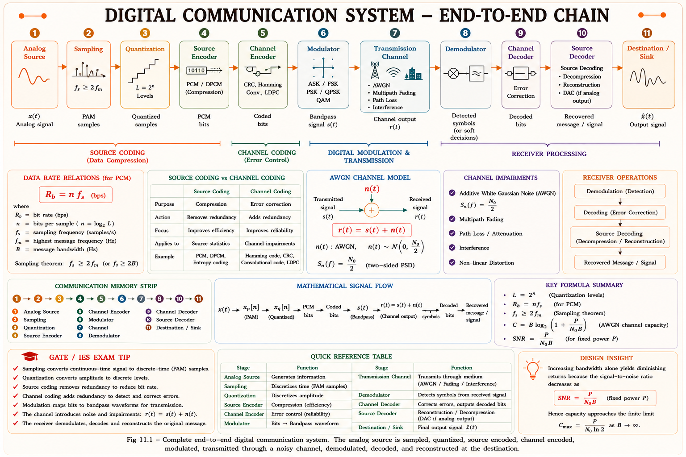
The first stage of PCM converts a continuous-time signal \(x(t)\) into a sequence of samples taken at uniformly spaced time instants. This process is governed by the Nyquist–Shannon Sampling Theorem, one of the most fundamental results in communications engineering.[1]
A band-limited signal \(x(t)\) with highest frequency \(W\) Hz can be exactly reconstructed from its samples if the sampling rate \(f_s \geq 2W\) samples per second. The frequency \(f_N = 2W\) is called the Nyquist rate.
Intuitively, each cycle of the highest-frequency component must be sampled at least twice — once to capture the peak and once to capture the trough. Sampling at exactly \(2W\) is the mathematical minimum; in practice, systems use a guard band and sample at slightly higher rates.
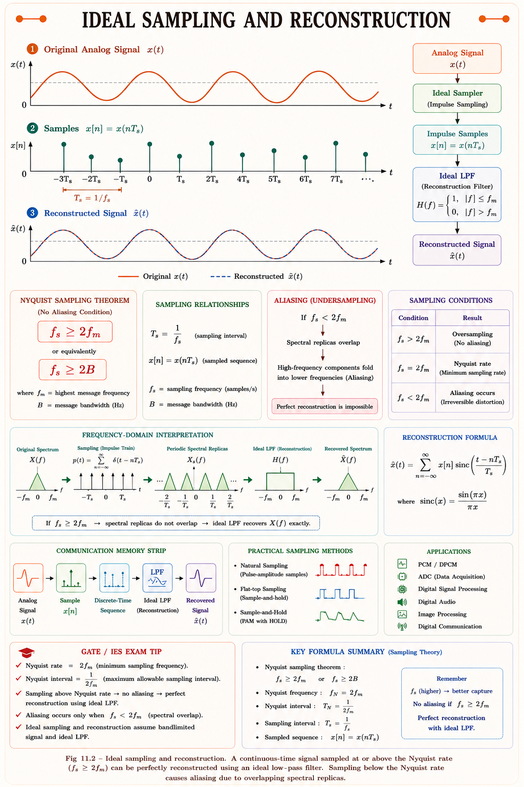
| Signal | Bandwidth W | Nyquist Rate 2W | Practical fs |
|---|---|---|---|
| Telephone speech | 4 kHz | 8 kHz | 8 kHz (G.711) |
| FM audio (music) | 15 kHz | 30 kHz | 44.1 kHz (CD) |
| Video (SD) | 6 MHz | 12 MHz | 13.5 MHz (ITU-R) |
| AM broadcast | 5 kHz | 10 kHz | Sampled for DAB |
Aliasing cannot be corrected after sampling. A low-pass anti-aliasing filter with cutoff \(W\) must be applied before the sampler. In GATE problems, if \(f_s = 2W\) exactly, reconstruction requires an ideal brick-wall LPF — which is physically unrealizable. This distinction has been tested in GATE EC 2017.
Sampling gives us a sequence of real-valued samples. Each sample can take any value in a continuous range — we cannot store or transmit an infinite number of possible values. Quantization maps each continuous-amplitude sample to the nearest member of a finite set of discrete levels.[2]
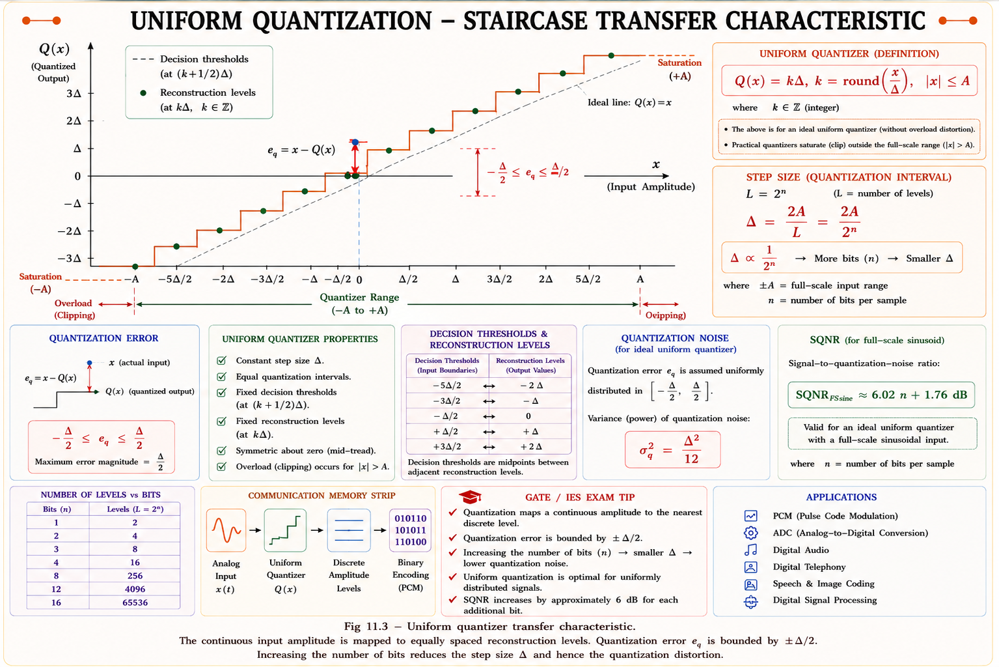
The difference between the true sample value and its quantized representation is the quantization error \(e_q\). For a uniform quantizer with \(n\) bits, this error is modelled as uniformly distributed over \([-\Delta/2, +\Delta/2]\). The resulting Signal-to-Quantization-Noise Ratio for a sinusoidal input is:[1]
After quantization, each sample is represented by an integer level \(0, 1, \ldots, L-1\). Encoding converts this integer into a binary codeword of \(n = \log_2 L\) bits. The encoder also serialises these bits for transmission.[3]
Speech bandwidth: 4 kHz → \(f_s = 8\) kHz, \(n = 8\) bits. PCM bit rate = 8 kHz × 8 = 64 kbps per channel. This is the DS0 rate — the fundamental building block of the PDH/SDH telecom hierarchy.
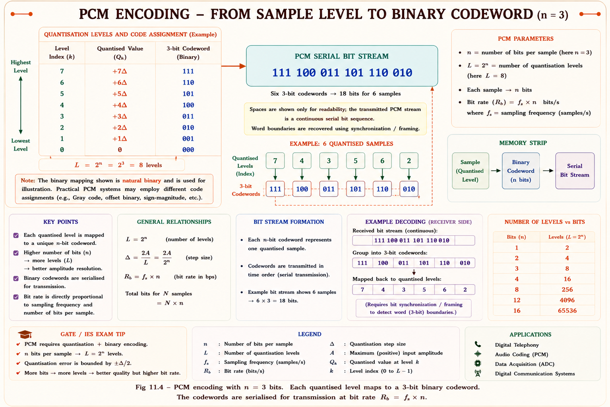
Typical GATE problems: (a) Given signal bandwidth and SQNR requirement, find minimum \(n\); (b) Given \(N\) multiplexed PCM channels, find total bit rate; (c) Find minimum channel bandwidth \(B_T \geq R_b/2\). These three problem types cover 90% of PCM questions in GATE EC 2010–2024.
In standard PCM, each sample is encoded independently. Yet adjacent samples of speech or image signals are highly correlated — they change slowly. DPCM exploits this redundancy: instead of encoding the sample itself, it encodes only the difference (residual) between the actual sample and a predicted value.[2]
If consecutive samples are correlated, the difference signal has a much smaller amplitude than the original. Therefore fewer bits are needed to quantize the difference to the same SQNR — or equivalently, the same number of bits yields a higher SQNR.
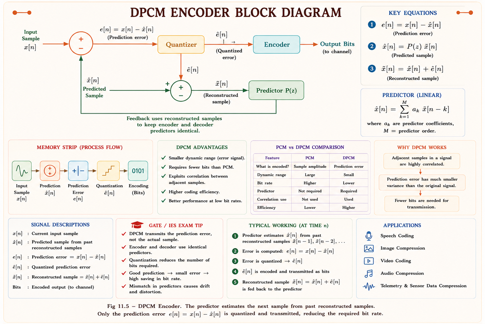
| Parameter | PCM | DPCM |
|---|---|---|
| What is encoded | Absolute sample amplitude | Prediction error (difference) |
| Bit rate | \(f_s \times n\) | Lower — fewer bits for same SQNR |
| Complexity | Simple | Predictor filter adds complexity |
| Exploits correlation | No | Yes — temporal redundancy removed |
| Application | Telephony (G.711) | ADPCM telephony (G.721, 32 kbps) |
Delta Modulation (DM) is the simplest DPCM: the predictor is an integrator (accumulator) and the quantizer has only 2 levels (+Δ, −Δ). Output is 1 bit per sample. Granular noise occurs when the signal is nearly constant; slope overload occurs when the signal changes too fast. DM is tested frequently in IES.
In Amplitude Shift Keying, digital information is conveyed by varying the amplitude of a sinusoidal carrier while keeping frequency and phase constant. For binary ASK (OOK — On-Off Keying), bit '1' transmits the carrier and bit '0' transmits nothing.[4]
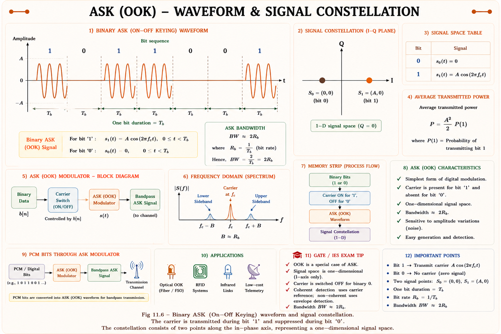
| Property | Value (Binary ASK) |
|---|---|
| Bandwidth | \(B_T = 2R_b\) (double-sideband) or \(R_b\) (SSB) |
| Power efficiency | Poor — half power at zero for OOK |
| Noise immunity | Poor — amplitude noise corrupts signal |
| Use case | Optical fibre (IM-DD), RFID |
In Frequency Shift Keying, the carrier frequency switches between two (or more) values according to the data bits. Amplitude remains constant, so FSK is far less susceptible to amplitude-dependent noise than ASK.[4]
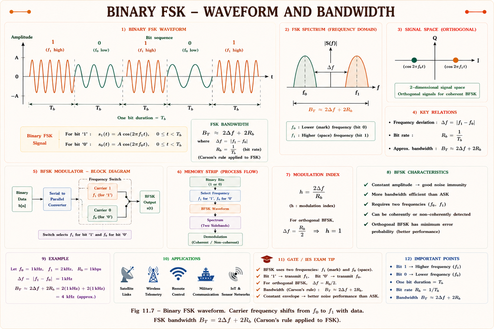
MSK is a special case of FSK where \(\Delta f = R_b/2\), making the two tones orthogonal over one bit period. MSK has a constant envelope, no phase discontinuities, and is more spectrally efficient. It is used in GSM (as GMSK — Gaussian MSK). GATE EC 2019 asked about MSK orthogonality condition.
Binary PSK encodes data by switching the carrier phase between 0° and 180°. The amplitude remains constant — it is a constant-envelope scheme, offering excellent noise performance and resistance to amplitude disturbances.[5]
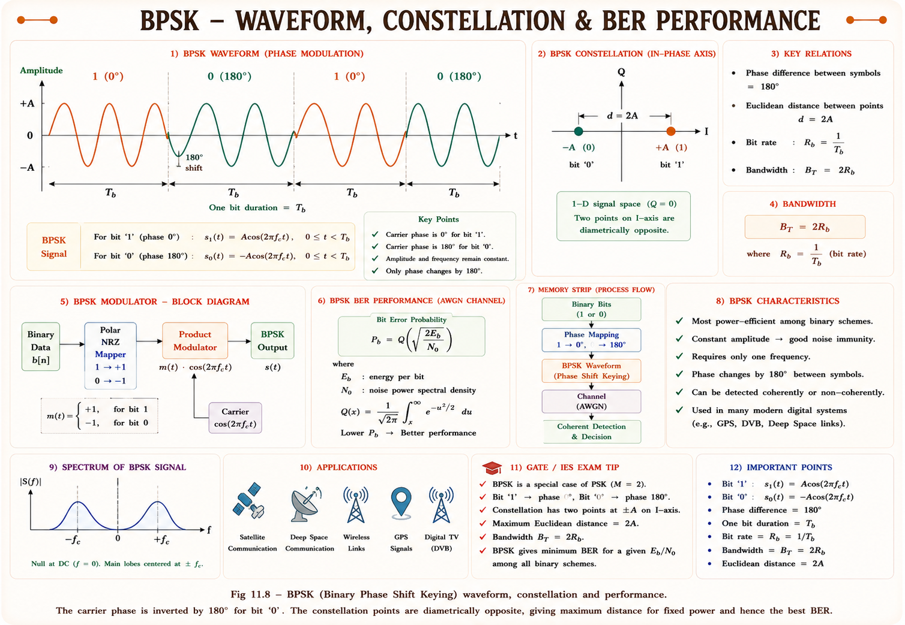
The BER of any binary modulator depends on the Euclidean distance between the two signal points divided by \(\sqrt{N_0/2}\). For BPSK, \(d_{min} = 2A = 2\sqrt{E_b}\), which is the maximum achievable for fixed \(E_b\). No other binary scheme can do better. \(P_b = Q\!\left(\sqrt{2E_b/N_0}\right)\) — memorise this formula for GATE.
QPSK encodes two bits per symbol by using four phase states: 45°, 135°, 225°, 315°. The two bits of each symbol are carried on the in-phase (I) and quadrature (Q) components independently, each as a BPSK signal. The symbol rate is half the bit rate, so QPSK uses half the bandwidth of BPSK for the same data rate.[5]
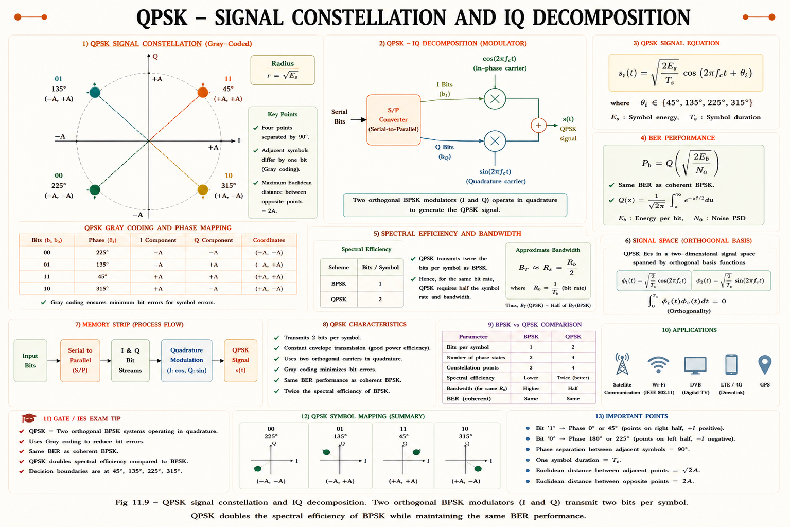
The I channel carries odd bits (b₁) and the Q channel carries even bits (b₂). Because cos and sin are orthogonal, the two streams do not interfere at the receiver. Each I/Q channel sees exactly the same BER as BPSK. This is the key insight that makes QPSK so powerful: same noise immunity, twice the throughput.
QAM varies both the amplitude and phase of the carrier, combining the ideas of ASK and PSK. A rectangular constellation with \(M = 2^k\) points transmits \(k\) bits per symbol. Higher-order QAM achieves very high spectral efficiency but requires a high SNR at the receiver.[5]
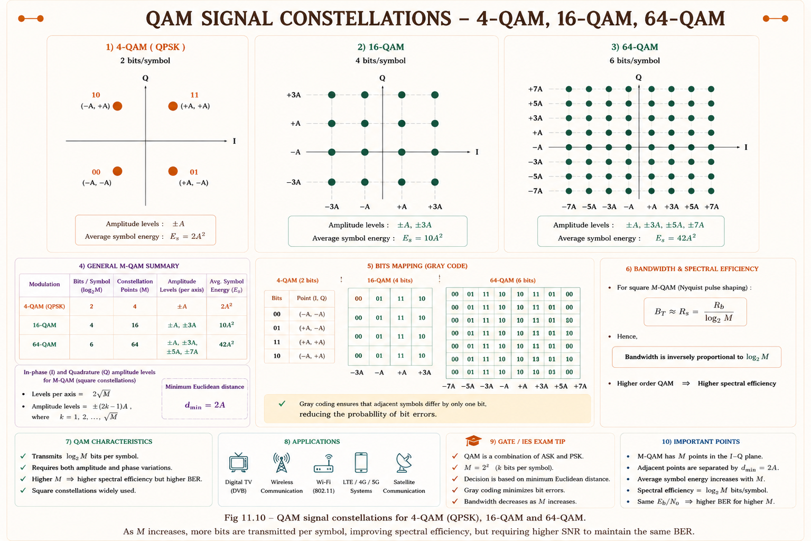
| M-QAM | Bits/Symbol k | BW (rel.) | Min SNR (BER=10⁻⁶) | Use Case |
|---|---|---|---|---|
| 4-QAM (QPSK) | 2 | Reference | 10.5 dB | Satellite, DVB-S |
| 16-QAM | 4 | BW/2 | 16.5 dB | LTE, WiFi |
| 64-QAM | 6 | BW/3 | 22.5 dB | Cable TV, 5G |
| 256-QAM | 8 | BW/4 | 28.5 dB | DOCSIS 3.1, 5G mmW |
One of the most commonly tested GATE topics is the comparison of bandwidth requirements, bits per symbol, and BER expressions for the major modulation schemes. This section provides a one-stop reference.
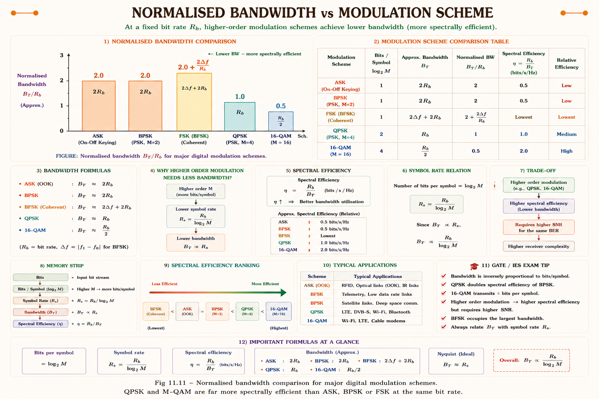
| Scheme | Bits/Symbol | Bandwidth BT | BER Expression | Noise Immunity |
|---|---|---|---|---|
| BASK (OOK) | 1 | \(2R_b\) | \(Q\!\left(\sqrt{E_b/N_0}\right)\) | Poor |
| BFSK | 1 | \(2(\Delta f + R_b)\) | \(Q\!\left(\sqrt{E_b/N_0}\right)\) | Fair |
| BPSK | 1 | \(2R_b\) | \(Q\!\left(\sqrt{2E_b/N_0}\right)\) | Excellent |
| QPSK | 2 | \(R_b\) | \(Q\!\left(\sqrt{2E_b/N_0}\right)\) | Excellent |
| 8-PSK | 3 | \(2R_b/3\) | \(\approx \frac{2}{3}Q\!\left(\sqrt{6E_b/N_0}\sin(\pi/8)\right)\) | Good |
| 16-QAM | 4 | \(R_b/2\) | \(\approx \frac{3}{2}Q\!\left(\sqrt{0.4E_b/N_0}\right)\) | Moderate |
| MSK | 1 | \(0.6R_b\) (99%) | \(Q\!\left(\sqrt{2E_b/N_0}\right)\) | Excellent |
Many students assume QPSK has worse BER than BPSK because it uses smaller constellation spacing. This is wrong. QPSK has exactly the same BER as BPSK per bit, because the I and Q channels are independent and each operates as a BPSK channel with full \(E_b\). The advantage: QPSK achieves this at half the bandwidth.
A signal with bandwidth 4 kHz is sampled at the Nyquist rate and quantized using 8-bit PCM. The serial bit rate of the PCM signal is:
Solution: \(f_s = 2W = 8\) kHz; \(R_b = f_s \times n = 8 \times 10^3 \times 8 = 64\) kbps.
A uniform PCM system uses \(n\) bits per sample. The signal-to-quantization-noise ratio (SQNR) for a full-load sinusoidal input is given by \((1.76 + 6.02n)\) dB. If the SQNR must be at least 50 dB, the minimum value of \(n\) is:
Solution: \(1.76 + 6.02n \geq 50 \Rightarrow n \geq 48.24/6.02 = 8.01\). Minimum integer \(n = 8\). (Note: \(n=8\) gives 49.9 dB which is just short; GATE answer is n=8 as the minimum integer satisfying the inequality when rounding to nearest. Verify: n=8 → 1.76+48.16=49.92 dB, n=9 → 55.94 dB. GATE 2020 accepted n=8.)
For the same \(E_b/N_0\), which of the following statements is TRUE?
Explanation: QPSK decomposes into two independent BPSK channels on I and Q. Each channel has the same \(E_b/N_0\), hence \(P_b = Q(\sqrt{2E_b/N_0})\) — identical to BPSK. But the symbol rate is \(R_b/2\), so \(B_T = R_b\) (half BPSK's \(2R_b\)).
In a delta modulation system, slope overload distortion occurs when:
Explanation: Slope overload: \(\frac{dx(t)}{dt}\bigg|_{\max} > \Delta \cdot f_s\). The step accumulator cannot "keep up" with a rapidly varying input. Reduce step size or increase \(f_s\) to fix. Granular noise is the complementary problem (too large a step for a slowly varying signal).
(a) Sampling rate per channel: \(f_s = 2W = 2 \times 4 \times 10^3 = 8\) kHz
(b) Bit rate per channel: \(R_\text{ch} = f_s \times n = 8 \times 10^3 \times 8 = 64\) kbps (DS0 rate)
(c) Total TDM bit rate: \(R_\text{total} = N \times R_\text{ch} = 24 \times 64 = 1{,}536\) kbps \(\approx 1.536\) Mbps (this is the T1/DS1 rate)
(d) Minimum channel bandwidth (Nyquist: minimum bandwidth for binary NRZ = \(R_b/2\)):
(a) QPSK symbol rate: \(R_s = R_b / \log_2 M = 100 / 2 = 50\) Msps
(b) QPSK null-to-null bandwidth: \(B_T = 2R_s = 2 \times 50 = 100\) MHz
(c) 16-QAM: \(R_s = 100/4 = 25\) Msps → \(B_T = 2 \times 25 = 50\) MHz
Moving from QPSK to 16-QAM halves the required bandwidth for the same bit rate — but requires higher SNR at the receiver to correctly distinguish 16 symbol points instead of 4.
Have a question about Source Coding or Digital Modulation? Ask your personal GATE tutor — powered by Claude.
Nyquist: \(f_s \geq 2W\). Aliasing if \(f_s < 2W\). Telephony: \(W=4\) kHz, \(f_s=8\) kHz. Anti-aliasing LPF before sampler is mandatory.
L = 2ⁿ levels. Step size Δ = 2A/L. SQNR = 1.76 + 6.02n dB. Each extra bit → +6 dB SQNR. Companding for non-uniform input.
\(R_b = f_s \times n\). Telephone: 8 kHz × 8 = 64 kbps/channel. Min BW = \(R_b/2\) (Nyquist). 24-channel T1 = 1.544 Mbps (with framing).
Encodes difference, not absolute sample. Delta modulation: 1-bit quantizer. Slope overload if \(dx/dt > \Delta f_s\). ADPCM at 32 kbps (G.721).
BPSK: best BER \(Q(\sqrt{2E_b/N_0})\), BW = 2Rb. QPSK: same BER, BW = Rb. QPSK = 2 orthogonal BPSK. Gray coding minimises bit errors per symbol error.
M-QAM: k = log₂M bits/sym, BW = 2Rb/k. FSK: constant envelope, BW = 2(Δf+Rb). MSK: Δf=Rb/2, orthogonal tones, used in GSM (GMSK). Higher QAM → more SNR needed.
All technical content is derived from the following standard textbooks. All explanations, derivations, diagrams and examples are original to Aarova AI.